Dedicada a todas aquellas mujeres que han pasado a dejar huella y han contribuido en el desarollo de importantes avances en los distintos ámbitos de la vida. Muchos avances y costumbres han cambiado a lo largo de los años y esto es gracias a su esfuerzo que, de una forma u otra, ha marcado un antes y un después . Este página describe mujeres que han logrado destacar, de las muchas que lo han hecho. A continuación detallamos cuál ha sido el aporte de cada una de ellas.
Mujeres Mexicanas de Ciencia
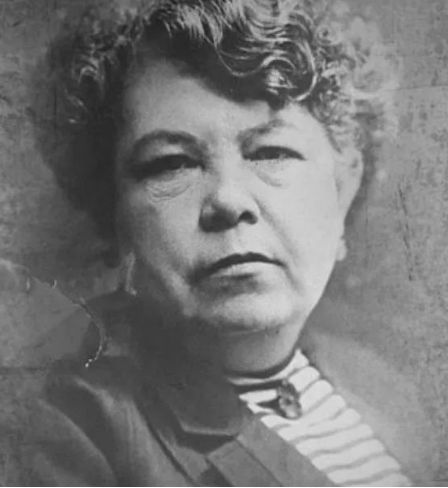
Matilde Montoya
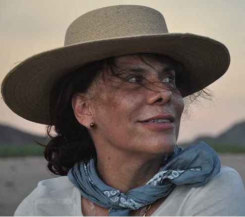
Mayra de la Torre
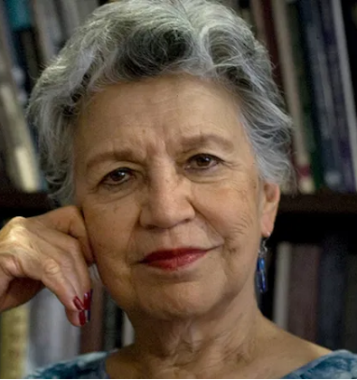
Silvia Torres-Peimbert
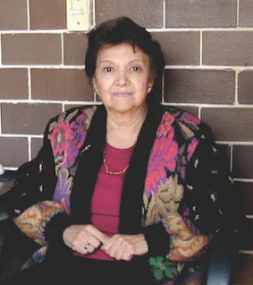
Victoria Chagoya
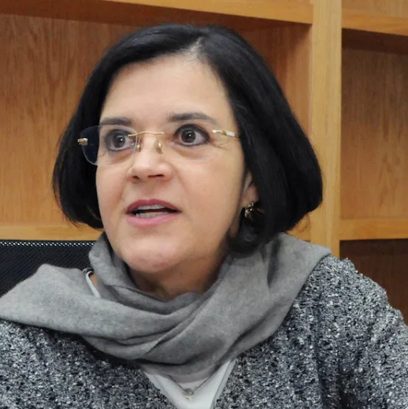
Alejandra Bravo

María Esther Orozco
Diversas páginas en donde podrás encontrar contenido divertido e interesante sobre un mismo punto: "La Ciencia"
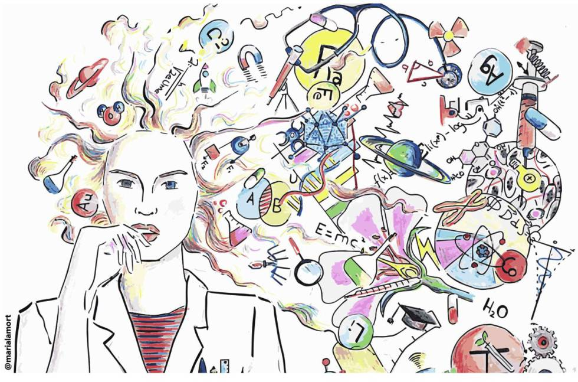
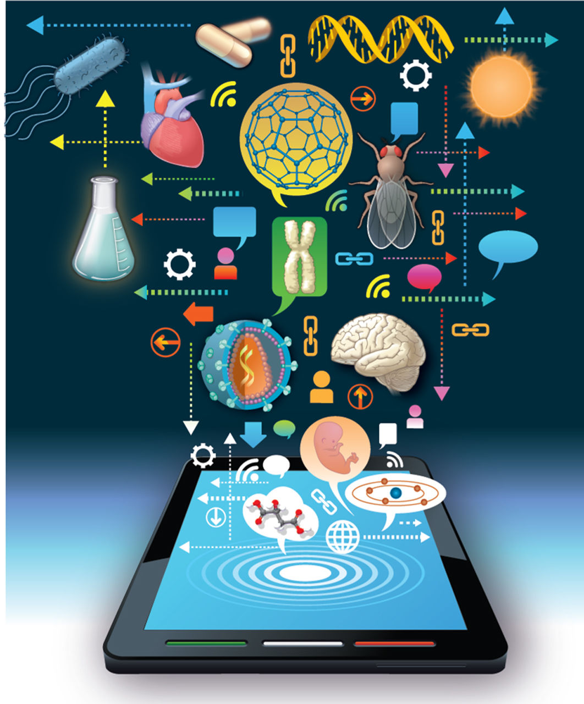
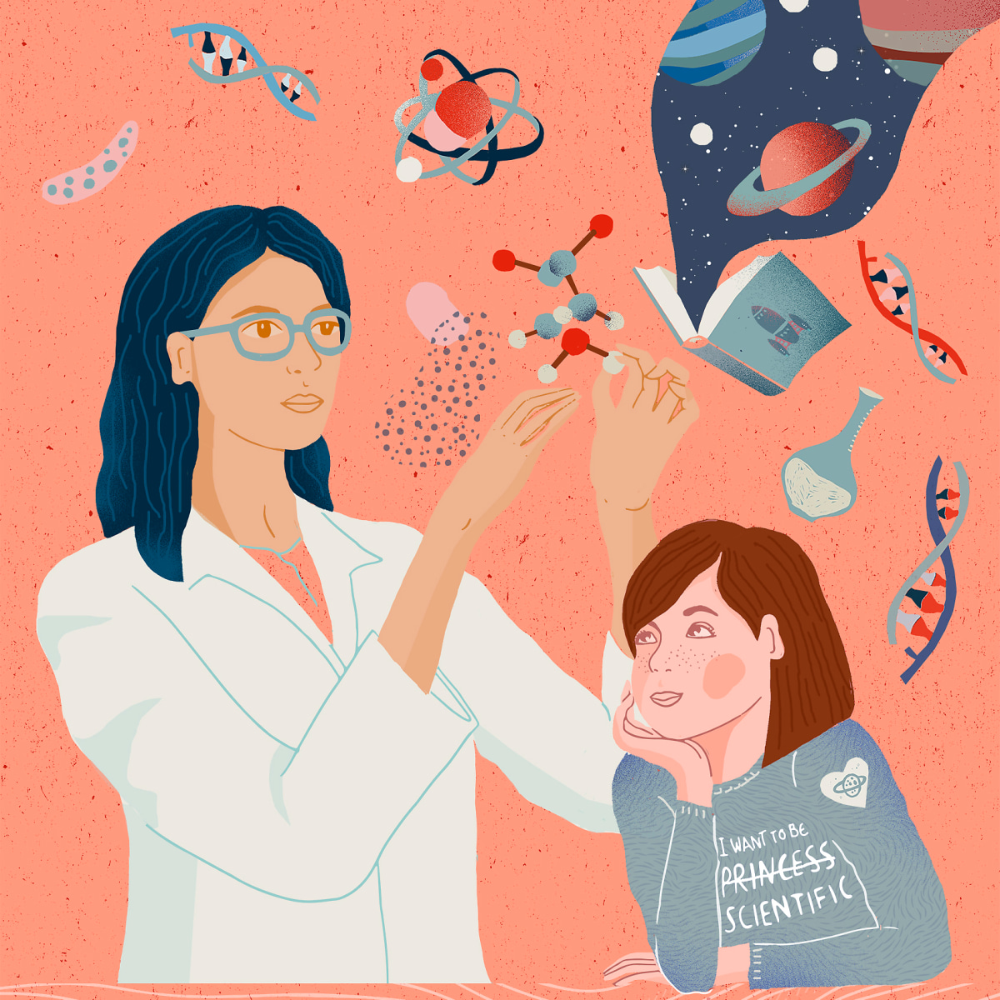
SE-Nano - Ensenada, Baja California
SE-Nano es una sociedad de estudiantes y egresados de la Licenciatura en Nanotecnología del Centro de Nanociencias y Nanotecnología de la UNAM. Espacio donde promueven sus ideas y proyectos, buscando su formación integral y el bienestar social.
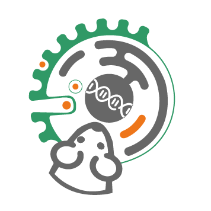
Nanotox Lab - Ensenada, Baja California
Nanotox Lab es un laboratorio de investigación en Nanotoxicología que aporta al sector académico e industrial brindando servicios especializados para determinar la bioseguridad de diferentes nanomateriales con potenciales aplicaciones en la industria y la medicina.
Nanotechgirl- Monterrey, Nuevo León
The nanotechgirl es una jóven que muestra su camino e inspira a jóvenes a pensar diferente tanto de los científicos como de la ciencia en sí. Para lograr esto, comparte historias de su día a día, en los cuáles se puede ver desde ciencia, hasta viajes y baile.
PILARES - Ciudad de México
Los puntos de Innovación , Libertad, Arte, Educación y Saberes (PILARES) son lugares en donde la ciudadanía tiene la oportunidad de compartir y recibir conocimientos que van desde las disciplinas artísticas, deportivas, encuentros culturales y de convivencia con otras ciencias para reforzar los valores en la capital.
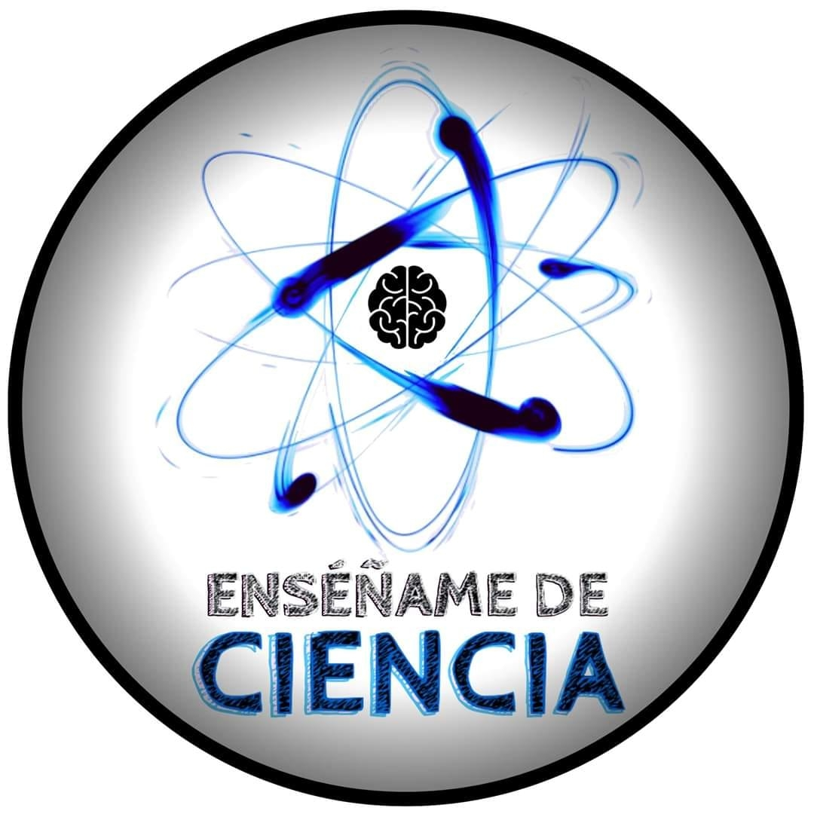
Enseñame de Ciencia - Cuajimalpa de Morelos
Enseñame de Ciencia es un medio de comunicación que tiene por objetivo fomentar la curiosidad de todas las personas a través de contenido agradable, entretenido y original. El conocimiento desde lo mas sencillo hasta lo más complejo, debe ser transmitido de una forma clara y agradable.
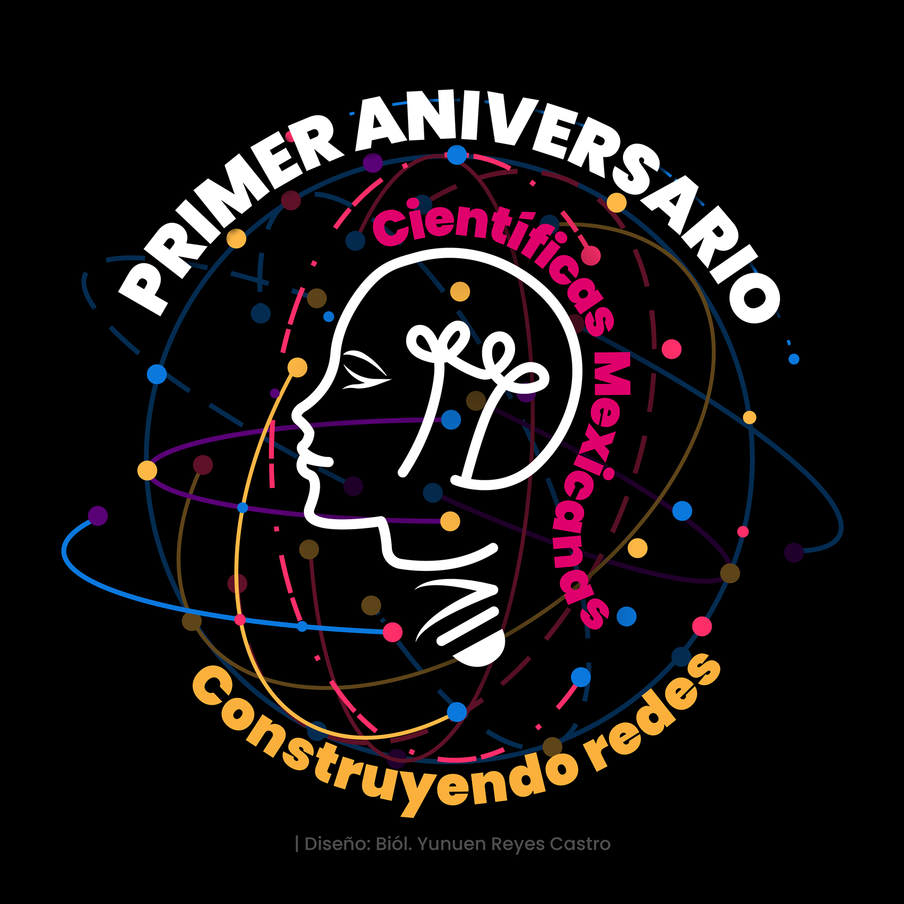
Científicas Mexicanas - De todo el Mundo
Científicas mexicanas es una comunidad de másde 14,400 mujeres em ciencia, tecnología e innovación. Han creado este espacio para visibilizar el trabajo de mujeres mexicanas en ciencia y acercar la investigación y el desarrollo a toda la sociedad.